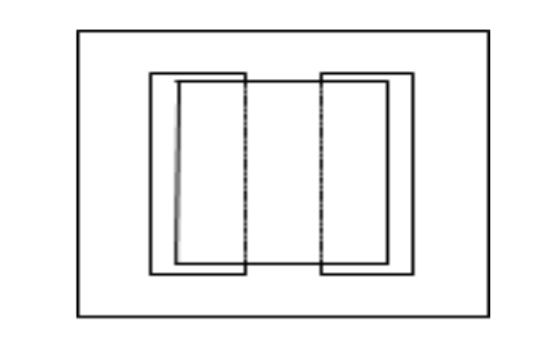
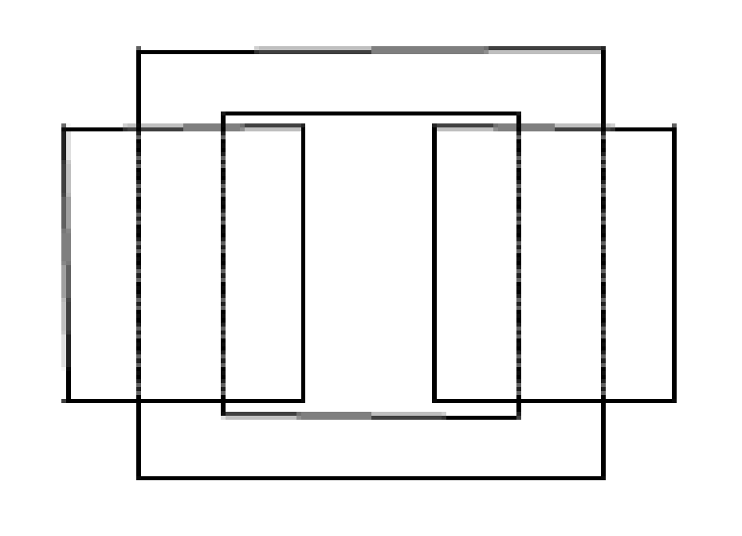
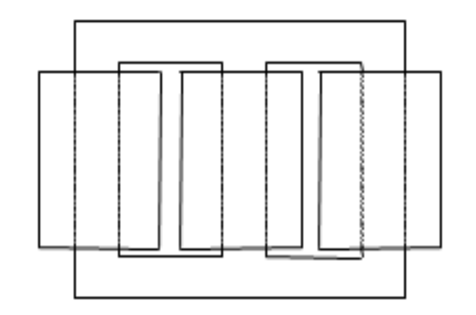

class: center, middle # EE-564 Design of Electrical Machines ## Ozan Keysan [ozan.keysan.me](http://ozan.keysan.me) Office: C-113 <span class="meta">•</span> Tel: 210 7586 --- # Inductor Design -- ## Can be used in power electronics <img src="http://www.coilws.com/images/Inductors%20Group.jpg" alt="Drawing" style="width: 600px;"> --- # Inductor Design -- ## Can be used in line-current filtering <img src="https://kebblog.com/wp-content/uploads/2015/05/Elevator-Harmonics-Filter-1024x607.png" alt="Drawing" style="width: 700px;"> --- # Inductor Design -- ## Can be used in grid level: Reactors <img src="http://westimqpower.com/wp-content/uploads/2016/03/69kV-Shunt-Reactors_SDGE_korrigiert-1500x630.jpg" alt="Drawing" style="width: 700px;"> --- ## [Shunt Reactors](http://electrical-engineering-portal.com/differences-between-shunt-reactor-and-power-transformer) ### [Gapped Core](http://hobbydocbox.com/Radio/69008077-Shunt-reactor-cores-up-to-765-kv-mvar.html) <img src="https://www.enpay.com/Files/Products/shunt2.jpg" alt="Drawing" style="width:800px;"> --- ## [Same Idea](http://hobbydocbox.com/Radio/69008077-Shunt-reactor-cores-up-to-765-kv-mvar.html) with a Gapped E-Core <img src="http://www.encyclopedia-magnetica.com/lib/exe/fetch.php/etd_core_gapped_magnetica.jpg?w=350&tok=c726a1" alt="Drawing" style="width:500px;"> --- # Real Inductors/Transformers Have: -- - ## Losses -- (Copper and Core) -- - ## Leakage flux -- - ## Magnetizing current -- - ## Hysteresis --- # Realistic Equivalent Circuit of a Transformer ## = Ideal Transformer + External Impedances --  --- # Winding Resistances: (\\(R_1, R_2\\)) or (\\(R_p, R_s\\)) - ## Resistance of the copper [Winding machine](http://www.youtube.com/watch?v=I_kJCLWwI2Y), [Winding for large transformers](http://youtu.be/yYFm3vxOVgw?t=24s), [Toroidal winding](https://www.youtube.com/watch?v=E-FpeRf3RvQ) -- - ### Question: In a step-down transformer which one is larger? ### \\(R_1\\) or \\(R_2\\)? -- - ## Copper Losses: \\(I^2 R \\) -- [Overloaded Transformer](http://youtu.be/pCZax3vIslo?t=1m5s), [Overloaded-part2](http://www.youtube.com/watch?v=uMpVbnWpe0o) --- # Leakage Flux -- ## Leakage Reactance: \\( X_{leakage} \\)  - ## Leakage through Air (Linear B-H, no hysteresis) --- # How to minimize leakage flux? --  - ## Where is the secondary winding? --- # How to minimize leakage flux? <img src="http://sub.allaboutcircuits.com/images/52012.jpg" alt="Drawing" style="width: 400px;"/> --- # Magnetizing Flux -- ## A term represents the necessary flux in the core. ##Magnetizing Reactance: \\( X_{m} \\)  --- # Core Losses - ## Hysteresis Loss (\\(\propto\\) Frequency) <img src="http://info.ee.surrey.ac.uk/Workshop/advice/coils/loop_area.png" alt="Drawing" style="width: 700px;"/> --- # Core Losses - ## Eddy Current Loss (\\(\propto\\) Frequency\\(^2\\))  --- #Excitation Current ## $$I_e(t) = I_c(t) + I_m(t)$$ ### Excitation Current = Core Loss Component + Magnetizing Component --- # Realistic Equivalent Circuit of a Transformer  ### \\(V_p , V_s, I_p, I_s \\): Primary, secondary voltages and currents -- ### \\(R_p , R_s\\): Primary, secondary coil resistances -- ### \\(X_p , X_s\\): Leakage Reactances --- # Realistic Equivalent Circuit of a Transformer  ### \\(R_c \\): Core Loss Resistance (to model hystresis/eddy current losses) -- ### \\(X_m\\): Magnetizing Reactance (due to non-zero \\(\int H dl\\) in the core) -- ### \\(E_p , E_s\\): Induced voltages in the ideal transformer --- # Transformer Design -- ### Handouts ### Transformer_Design Folder in the supplied files --- # Core Design -- ## [Core Manufacturing](https://www.youtube.com/watch?v=FXcBKxAc4_k) <img src="http://www.teuklaminations.com/wp-content/uploads/2016/06/TEUK-Unicore.jpg" alt="Drawing" style="width: 500px;"/> --- # Core Design ## Shell Type --  --- # Core Design -- ## Core Type --  --- # Core Design ## 3P-Core Type --  --- # Core Design ## 5P-Core Type -- --- # Transofrmer Winding <img src="http://www.surplechv.com/wp-content/uploads/2012/05/bobinage3.jpg" alt="Drawing" style="width: 700px;"/> ### [Transformer Winding Process](https://www.youtube.com/watch?v=yYFm3vxOVgw) --- # Transformer Design Exercise -- - ## Design a Transformer with the following specifications: -- - ## 500 kVA, Single Phase -- - ## 34.5 kV, 25 kV Single Phase -- - ## 50 Hz -- - ## Ambient Temp: -30, 50 C. Cooling: ONAN --- # Design Steps -- - ### Choose Core Material -- - ### Choose Operating Flux Density -- - ### Determine Core Dimensions & Number of Turns -- - ### Determine Core Losses, Copper Losses and Equivalent Circuit Parameters -- - ### Determine operating temp. -- - ### Determine mass, cost etc. --- # Useful Links - [Basic Dimensions-Magnetic Circuits](http://ecee.colorado.edu/copec/book/slides/Ch13slides.pdf) - [Transformer Design](http://ecee.colorado.edu/~ecen5797/course_material/Ch15slides.pdf) - [Power Transformer Design](http://www.cs.toronto.edu/~relu/audio/docs/pwrtransformerdesign.pdf) - [Design of Transformers](http://www.freebookezz.com/pdf/17958618263/) - [Conventional Transformer Design](http://link.springer.com/chapter/10.1007/978-1-84882-667-0_2) - Material Selection: See previous lecture notes - [Lekage Flux Calculation](https://www.pes.ee.ethz.ch/uploads/tx_ethpublications/06_Integration_Leakage_CIPS2012.pdf), page 4 --- # Alternative Exercises ## - [Dry-type 5kVA](http://www.acmetransformer.com/en/t253014s) ### - High Frequency Transformer for HVDC Transmission ### - (3 kV, 300kV 1 kHz, 1 MVA) --- ## You can download this presentation from: [keysan.me/ee564](http://keysan.me/ee564)